3. ggplot2
Г. Мороз
Данные
library(tidyverse)
homo <- read_csv("https://raw.githubusercontent.com/agricolamz/2019_FE_R_statistics/master/data/Hau.2007.csv")
homoThe majority of examples in that presentation are based on Hau 2007. Experiment consisted of a perception and judgment test aimed at measuring the correlation between acoustic cues and perceived sexual orientation. Naïve Cantonese speakers were asked to listen to the Cantonese speech samples collected in Experiment and judge whether the speakers were gay or heterosexual. There are 14 speakers and following parameters:
- [s] duration (s.duration.ms)
- vowel duration (vowel.duration.ms)
- fundamental frequencies mean (F0) (average.f0.Hz)
- fundamental frequencies range (f0.range.Hz)
- percentage of homosexual impression (perceived.as.homo)
- percentage of heterosexal impression (perceived.as.hetero)
- speakers orientation (orientation)
- speakers age (age)
1. Мотивация
1.1 Anscombe’s quartet
In Anscombe, F. J. (1973). “Graphs in Statistical Analysis” was presented the next sets of data:
quartet <- read.csv("https://raw.githubusercontent.com/agricolamz/2019_FE_R_statistics/master/data/anscombe.s.quartet.csv")
quartetquartet %>%
group_by(dataset) %>%
summarise(mean_X = mean(x),
mean_Y = mean(y),
sd_X = sd(x),
sd_Y = sd(y),
cor = cor(x, y),
n_obs = n()) %>%
select(-dataset) %>%
round(., 2)
1.2 Datasaurus
In Matejka and Fitzmaurice (2017) “Same Stats, Different Graphs” was presented the next sets of data:
datasaurus <- read_tsv("https://raw.githubusercontent.com/agricolamz/2019_FE_R_statistics/master/data/datasaurus.tsv")
head(datasaurus)datasaurus %>%
group_by(dataset) %>%
summarise(mean_X = mean(x),
mean_Y = mean(y),
sd_X = sd(x),
sd_Y = sd(y),
cor = cor(x, y),
n_obs = n()) %>%
select(-dataset) %>%
round(., 1)2. Scatter plot
- ggplot2
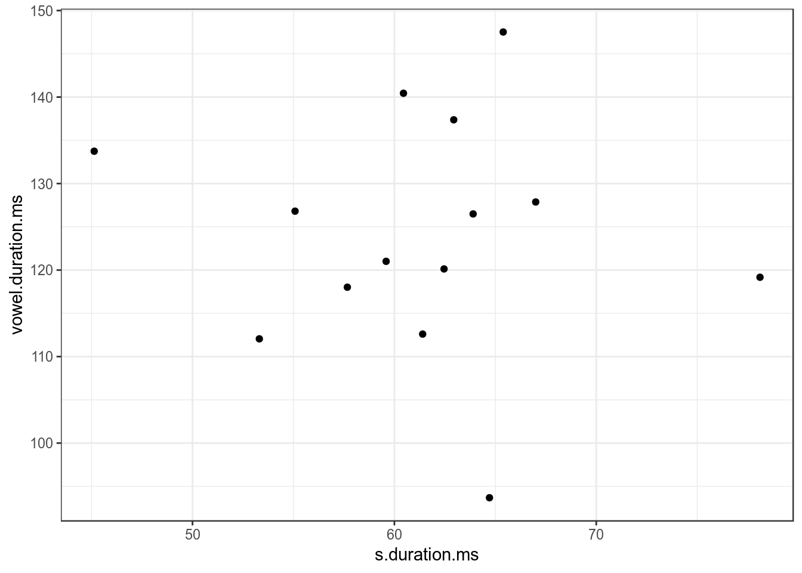
- dplyr, ggplot2
homo %>%
ggplot(aes(average.f0.Hz, age))+
geom_smooth(method = "lm")+
geom_point(aes(color = orientation))
2.1 Scaterplot: color

2.2 Scaterplot: shape
homo %>%
ggplot(aes(s.duration.ms, vowel.duration.ms,
shape = orientation)) +
geom_point(color = "red")
2.3 Scaterplot: size

2.4 Scaterplot: text
homo %>%
mutate(label = ifelse(orientation == "homo","⚣", "⚤")) %>%
ggplot(aes(s.duration.ms, vowel.duration.ms, label = label, fill = orientation)) +
geom_label()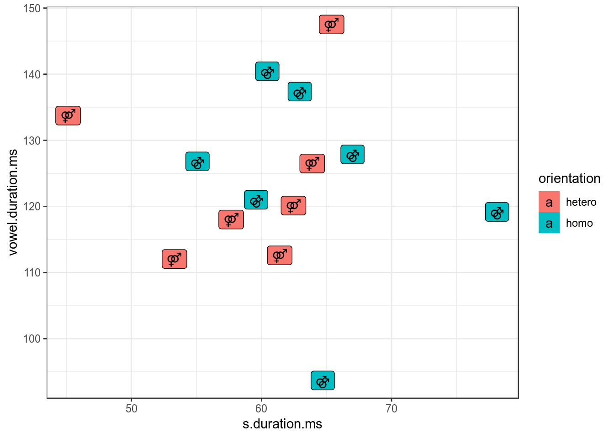
homo %>%
mutate(label = ifelse(orientation == "homo","⚣", "⚤")) %>%
ggplot(aes(s.duration.ms, vowel.duration.ms, label = label, color = orientation)) +
geom_text()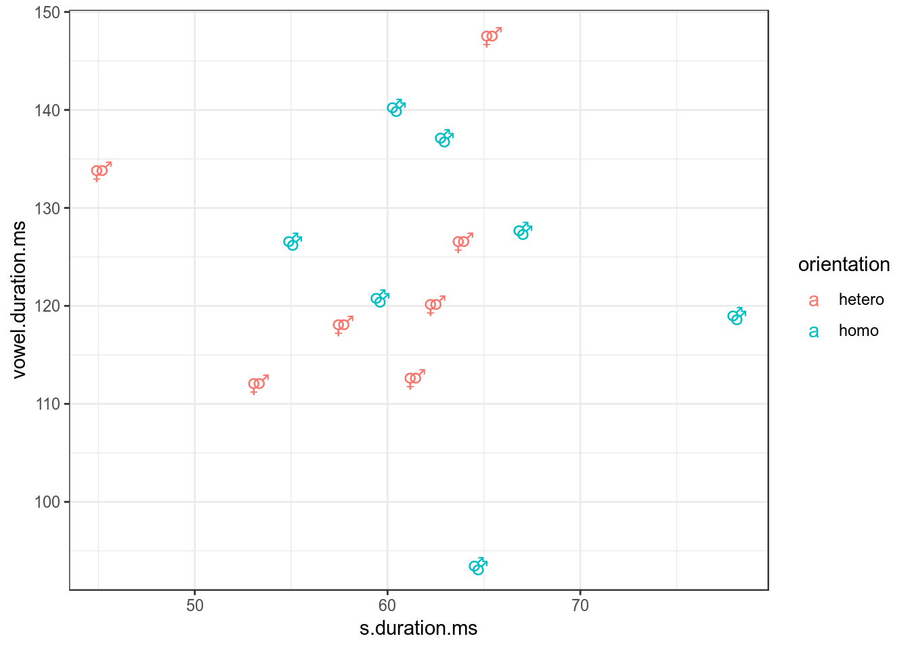
2.5 Scaterplot: title
homo %>%
ggplot(aes(s.duration.ms, vowel.duration.ms)) +
geom_point()+
labs(title = "length of [s] vs. length of vowels",
subtitle = "based on 14 speakers of Cantonese",
caption = "data from [Hau 2007]")
2.6 Scaterplot: axis
homo %>%
ggplot(aes(s.duration.ms, vowel.duration.ms)) +
geom_point()+
labs(x = "duration of [s] in ms",
y = "vowel duration in ms")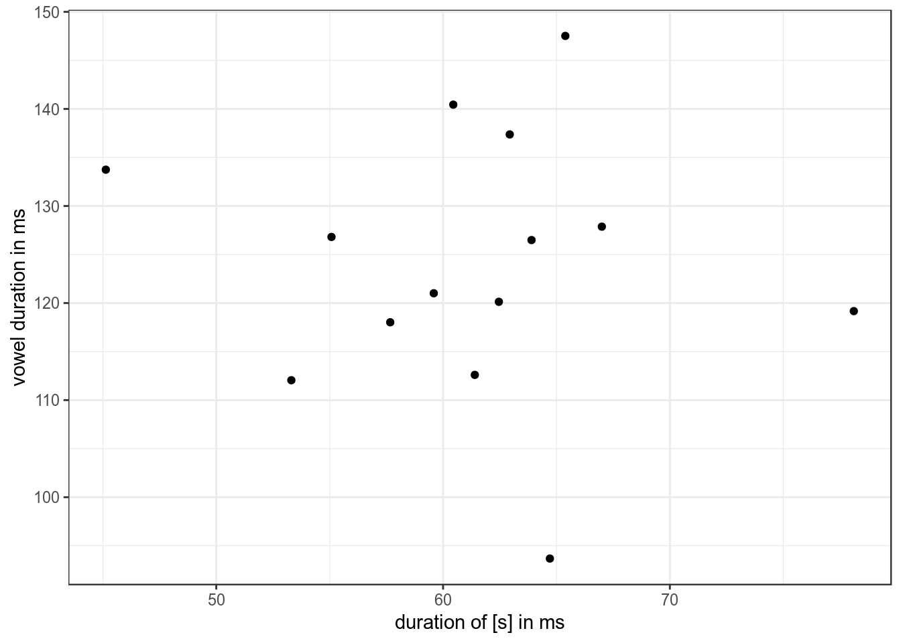
2.7 Log scales

Lets use the frequency dictionary for Russian
freq <- read_csv("https://raw.githubusercontent.com/agricolamz/2019_FE_R_statistics/734e562ea27b67a43846c32298bf06be22a55d69/data/freqrnc2011_1000.csv")
freq %>%
ggplot(aes(rank, freq_ipm)) +
geom_point() +
labs(x = "", y = "ipm")
2.8 Scaterplot: rug
homo %>%
ggplot(aes(s.duration.ms, vowel.duration.ms, color = orientation)) +
geom_point() +
geom_rug()
2.9 Scaterplot: lines
homo %>%
ggplot(aes(s.duration.ms, vowel.duration.ms)) +
geom_point() +
geom_hline(yintercept = mean(homo$vowel.duration.ms))+
geom_vline(xintercept = 60)
homo %>%
ggplot(aes(s.duration.ms, vowel.duration.ms)) +
geom_point() +
geom_hline(yintercept = 120, linetype = 2)+
geom_vline(xintercept = 60, size = 5)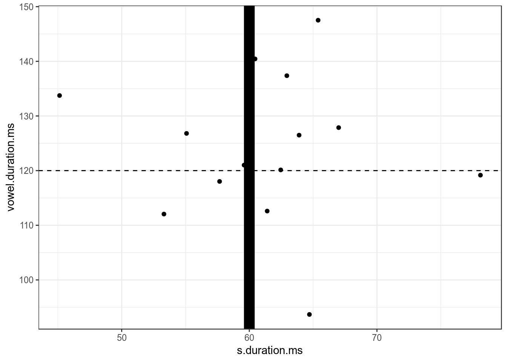
homo %>%
ggplot(aes(s.duration.ms, vowel.duration.ms)) +
geom_point() +
geom_hline(yintercept = 120, linetype = 4)+
geom_vline(xintercept = 60, color = "blue")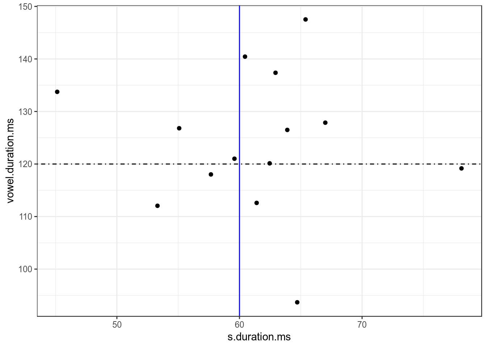
2.10 Scaterplot: annotate
Функция annotate добавляет geom к графику.
homo %>%
ggplot(aes(s.duration.ms, vowel.duration.ms)) +
geom_point()+
annotate(geom = "rect", xmin = 77, xmax = 79,
ymin = 117, ymax = 122, fill = "red", alpha = 0.2) +
annotate(geom = "text", x = 78, y = 125,
label = "Who is that?\n Outlier?")
2. Bar chart (столбчатая диаграмма)
There are two possible situations:
- not aggregate data
- aggregate data
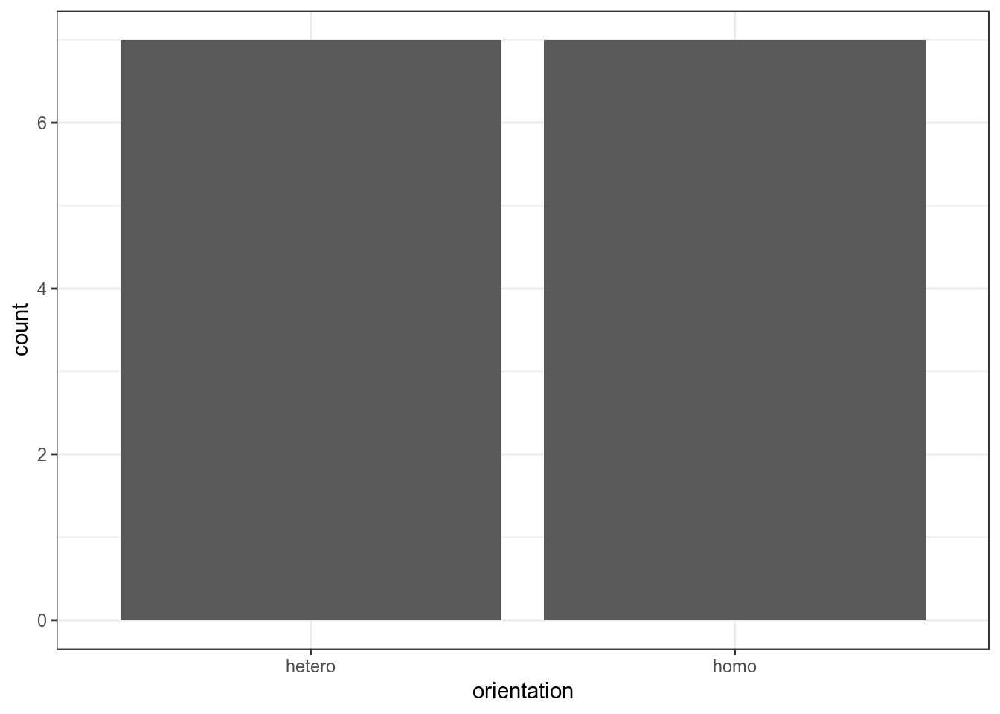


3. График плотности


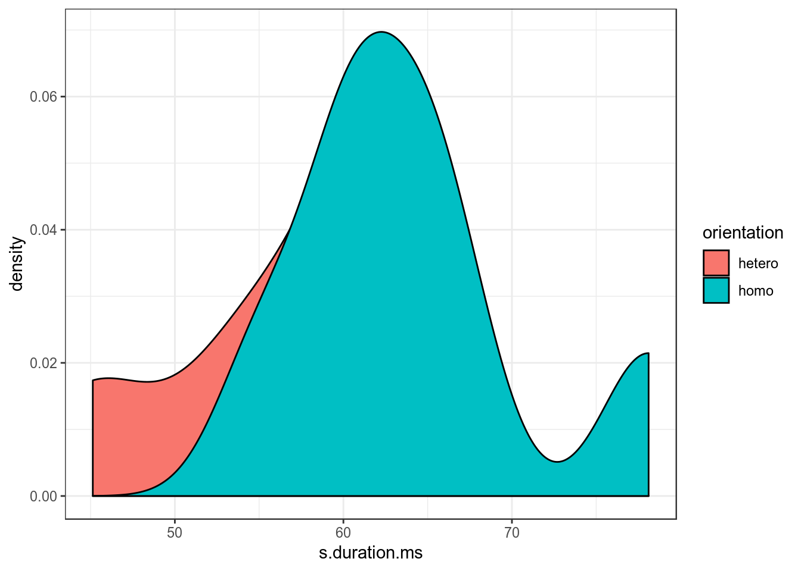

library(ggridges)
homo %>%
ggplot(aes(s.duration.ms, orientation, fill = orientation)) +
geom_density_ridges()
4. Boxplot (ящик с усами)


5. Предварительно
- scaterplot: two quantitative varibles
- barplot: nominal varible and one number
- boxplot: nominal varible and quantitative varibles
- jittered points or sized points: two nominal varibles
mtcars %>%
mutate(newvar = mpg > 22,
newvr = mpg < 17) %>%
ggplot(aes(newvr, newvar, color = newvar))+
geom_jitter(width = 0.2)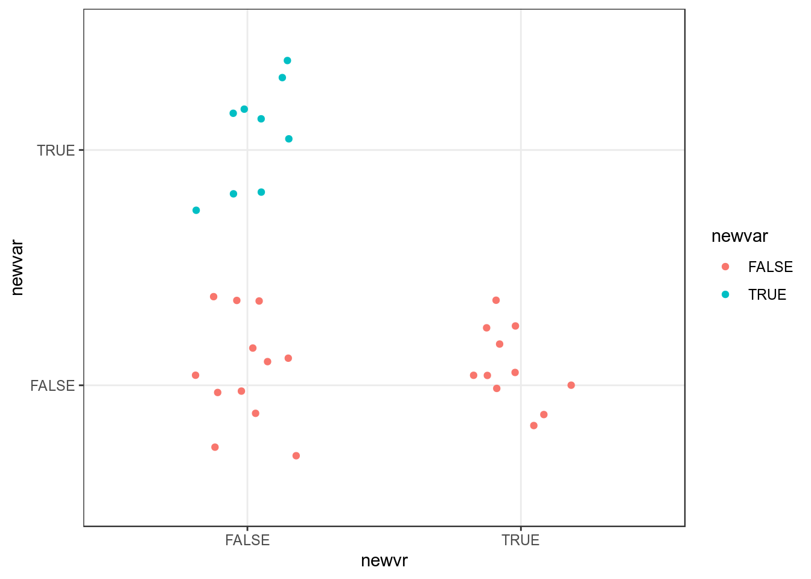
mtcars %>%
mutate(newvar = mpg > 22,
newvr = mpg < 17) %>%
group_by(newvar, newvr) %>%
summarise(number = n()) %>%
ggplot(aes(newvr, newvar, label = number))+
geom_point(aes(size = number, color = newvar))+
geom_text()+
scale_size(range = c(10, 30))+
guides(size = F)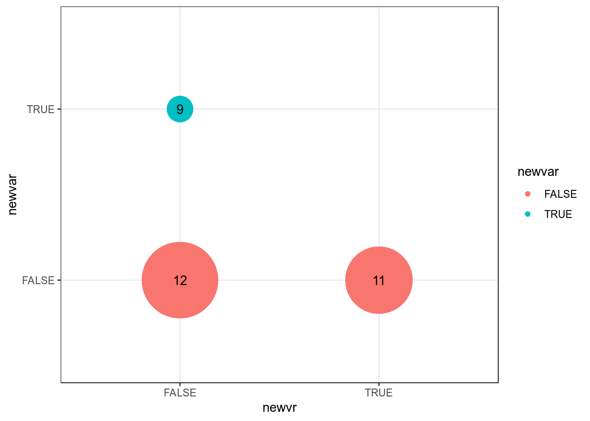
6. Гистограммы
 Сколько нам нужно ячеек гистограммы?
Сколько нам нужно ячеек гистограммы?
- [Sturgers 1926]
nclass.Sturges(homo$s.duration.ms) - [Scott 1979]
nclass.scott(homo$s.duration.ms) - [Freedman, Diaconis 1981]
nclass.FD(homo$s.duration.ms)


7. Фасетизация
Фасетизация наиболее сильное оружие ggplot2, позволяющее разбить данные по одному или нескольким переменным и нанести награфик получившиеся подгруппы.
7.1 ggplot2::facet_wrap()
homo %>%
ggplot(aes(speaker, s.duration.ms))+
geom_point() +
facet_wrap(~orientation, scales = "free")
homo %>%
ggplot(aes(speaker, s.duration.ms))+
geom_point() +
facet_wrap(~orientation, scales = "free_x")
7.2 ggplot2::facet_grid()
homo %>%
mutate(older_then_28 = ifelse(age > 28, "older", "younger")) %>%
ggplot(aes(speaker, s.duration.ms))+
geom_point() +
facet_wrap(older_then_28~orientation, scales = "free_x")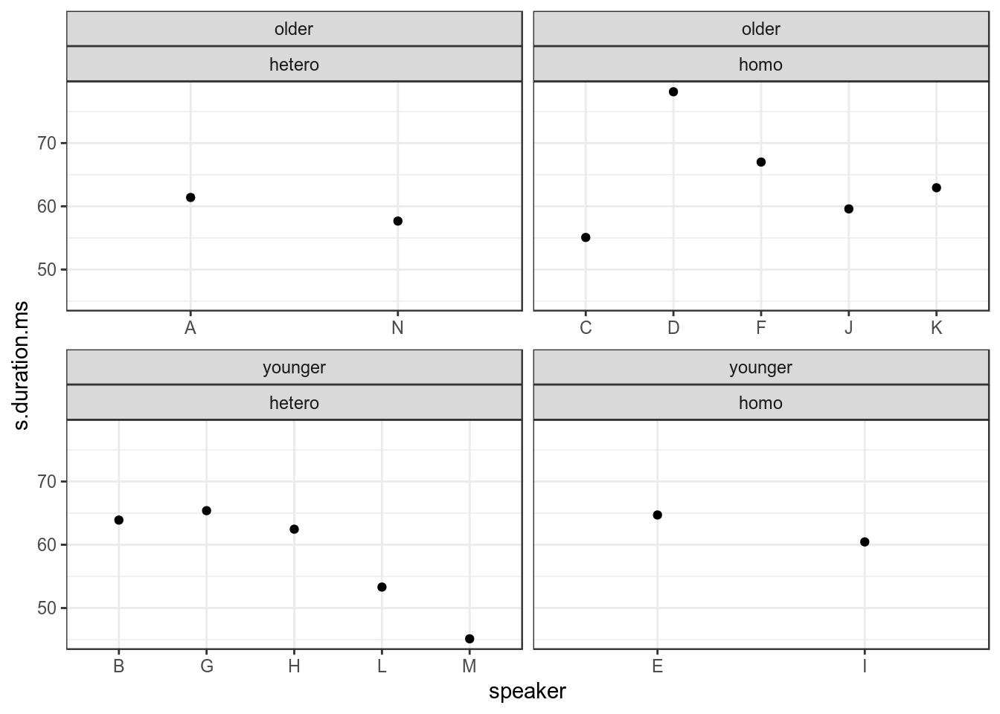
homo %>%
mutate(older_then_28 = ifelse(age > 28, "older", "younger")) %>%
ggplot(aes(speaker, s.duration.ms))+
geom_point() +
facet_grid(older_then_28~orientation, scales = "free_x")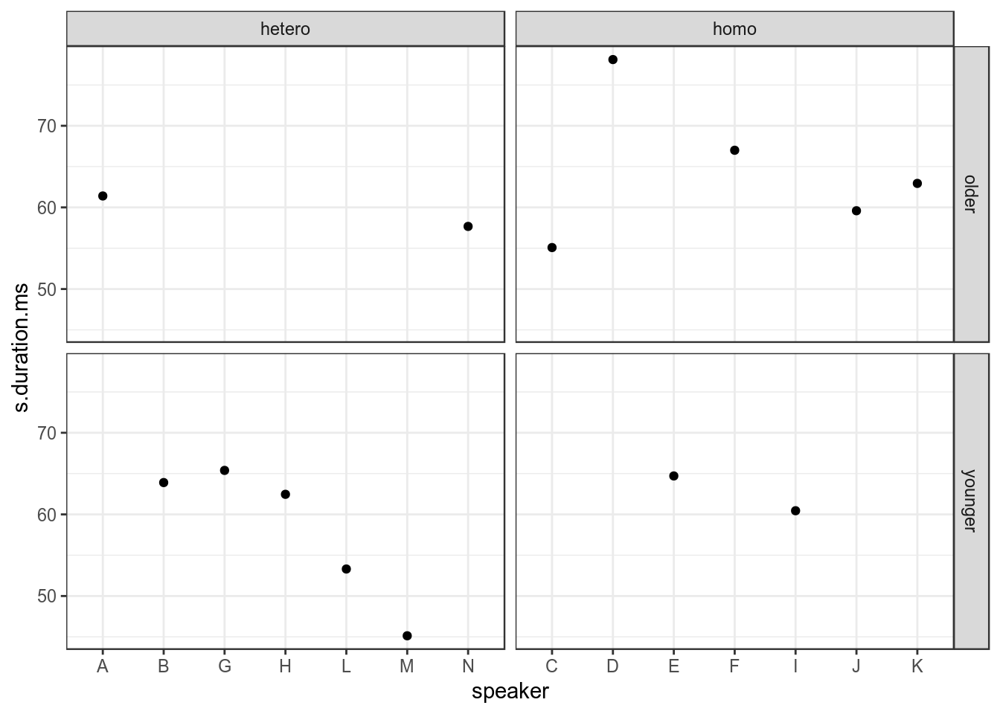
Существует еще славный аргумент margins.
homo %>%
mutate(older_then_28 = ifelse(age > 28, "older", "younger")) %>%
ggplot(aes(speaker, s.duration.ms))+
geom_point() +
facet_grid(older_then_28~orientation, scales = "free_x", margins = TRUE)
Иногда, очень хорошо показывать все данные на каждом фасете:
homo %>%
ggplot(aes(speaker, s.duration.ms))+
# Add an additional geom without facetization variable!
geom_point(data = homo[,-9], aes(speaker, s.duration.ms), color = "grey") +
geom_point() +
facet_wrap(~orientation)+
theme_bw()